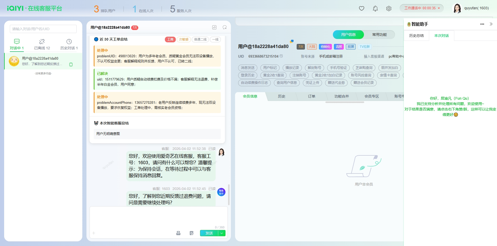
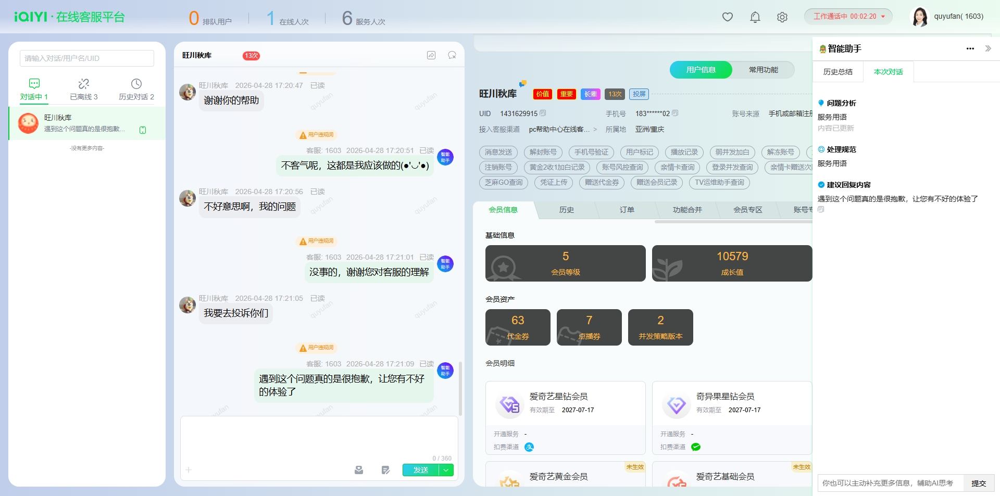

坐席助手
让每个客服都有"AI辅助驾驶"
历史客诉自动总结
用户进线，AI先帮你看历史
过去
用户进线后客服需要手动查询历史记录、翻看对话详情，耗时几分钟才能了解上下文。
→
现在
AI自动总结历史问题和处理进度，并主动询问用户是否继续处理。系统在用户进线第一时间总结并展示用户咨询历史。

坐席助手 · 历史客诉自动总结 + 用户数据展示
情绪识别 + 智能安抚
不只是预警，更是行动
过去
用户情绪激动时系统预警，提醒客服人工安抚——全靠坐席临场反应。
→
现在
AI实时识别用户情绪（致歉、致谢、投诉、负向），自动发送合适的安抚话术，提升服务温度。

坐席助手 · 情绪识别 + 智能安抚建议
退费客诉全自动回复试点
从辅助建议到自主执行
过去
退费客诉全流程由人工坐席处理，从判断到回复到操作，完全依赖人工。
→
现在
坐席助手实现退费客诉全自动回复试点（除操作类），减少人工介入。同时支持自动回复、建议回复等基础功能。

坐席助手 · 退费客诉全自动回复试点